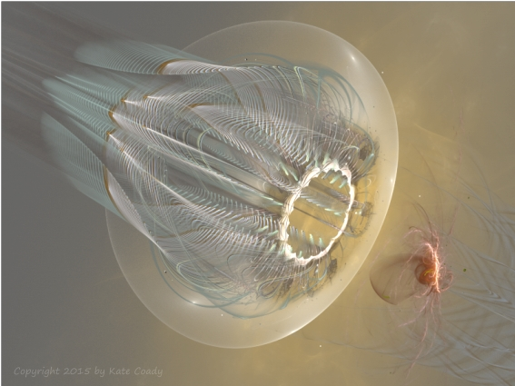

Eve of Evil (Part 4)
by
Gregg Marchese
Darlai knew she could not forge through its mighty field. She could not will her soul to move any closer. It stood between her and salvation, not just for her but for the future of all known humanity. The Cynosure would linger unfulfilled, her benign essence never mingled with the malicious counterforce Darlai bore. Darlai's soul was finally lost.
With swirls through its dark substance, a tunnel formed through the grey fog. Its opening stood aligned with Darlai's path toward the Periblima. Deep within, she thought she could see a distant flash of iridescence. Unquestioning, giving her terror full sway, she bolted into the tunnel and rushed toward the Periblima. Tiny whisps of darkness swept off the walls of the tunnel and brushed Darlai's form like moist mist as she hurtled along. Some seeped in and swirled through tiny pockets of her soul, all but unnoticed against the grotesque hunger of the Ab-norm. Slowly, they began to coalesce.
The yielding bulk of the slime chair was a distant sensation. None of its usual warmth or soothing caress reached Darlai. All her awareness was given to hardening her soul within. The Ab-norm was ravening like a drill at the wall she had made around her core, where that abject infant now sat quiescent, its constant wail frozen in terror. Furiously the Ab-norm burrowed, snarling and tearing at the firm stuff of her soul-barrier, slavering to devour her ultimate essence.
She succeeded! Mission successful. Class Two entity procured and contained. Darlai barely heard Milden's excited sendings, barely sensed when the helm was withdrawn, the tingle on her scalp all but meaningless. She devoted her remaining strength to the barrier within. She knew that if the Ab-norm broke through, it would devour this final part of herself, which she now knew to be the essential heart of her being. Then she would be a soul-slave of the creature forever. Could this be the beginnings of the hybrid monsters that the prophecies claimed beset the future? She could not bear to become that which she had devoted her life to preventing.
The Ab-norm sensed her determination and flung itself into frenzy, boring like a wriggling spear at her barrier. Against that aweful force, Darlai began to weaken. The infant cringed in helpless fear.
Then a soft presence settled inside her. A kindly calm energy touched her, and it urged Darlai to look up. Her resistance was less than futile; it was preventing the very blessing they all needed. Just relent and open outward...
The Cynosure! Darlai found she could not relent however, even at the urging of that wise being. No such surrender could serve the Program and make all their efforts successful. Darlai knew that if she let go for an instant, the Ab-Norm would have her. And the hybrid creature she would become could never embody the being the Cynosure needed. The wise one really needed —
"Darlai 19. One last task now: allow entity total access to all psychic material." She could hear Milden's voice now that the helm was removed, and that long-trained part of herself jerked impulsively to comply. Almost she dropped her inner barrier out of habit. Eldrin had shown her too much of her past though, revealed too much of the Program's early imprinting. She knew she was more than a product of selective abandonment and carefully redirected despair. Yet that too was in her mind when she opened her eyes and strove through inner distress to look around.
Her vision was blurry, distorted by inner pressure, and her head pounded in agony. That pale shape must be Milden, standing over her and frowning down. Beside him, that more slender form, sitting on its black plinth and peering placidly — the Cynosure.
Show it the way out, child, and then gift it to one who may truly serve with it. It's what you are bred and raised to do. Darlai saw a soft smile on the Cynosure's colorless lips.
Milden leaned closer. "Mission objective successful. You got one, Darlai 19! Final Program Imperative is to merge with entity within psychic-biologic confines. Allow merging at once."
The Ab-norm escalated its furious attack, and Darlai must send her last dregs of energy to her barrier to prevent it breaking through. Her vision darkened and she could barely see the chamber.
She knew what the Cynosure had meant, though. She reached out, and before Milden could draw away, grasped his arm. With frantic strength drawn from the rabid energy of the Ab-norm, Darlai felt her nails lengthen and harden into claws, to clutch through the Handler's sleeve and into his flesh. Milden screeched and tried to tear away, but her grip was too strong. The bright smell of blood clogged the air.
Within, the Ab-norm paused. In manic hunger it spun about, seeking. Darlai opened a channel within herself, leading to her mind, her eyes, her sense of smell. At once the Ab-norm bolted up this channel and looked out of her eyes. It stared at the spreading stain of red around her clutching claws. It sniffed, and snarled at the potent scent of fresh blood. Darlai felt her jaw dislocate as the Ab-norm stretched wide her mouth and lunged to bite at Milden's face.
He screamed as her teeth closed on his soft cheek. The flesh was slack, and the Ab-norm flung Darlai's head back, tearing loose a slab of skin. She tasted the coppery tang. Milden could only moan through his ruined face as the Ab-norm swallowed down Darlai's gullet and lunged in to bite at the Handler's throat.
The presence of the Cynosure was now one of calm acceptance. A sense of peace at the inevitable outcome flooded her spirit.
Darlai was now freed from protecting her core self, and used the liberated energy to grapple once again with the Ab-norm. She had learned how to restrain it, and she fashioned a psychic chain that held the monster away from Milden for a moment. It snarled and strained against the chain, but could not pull away. Darlai wrestled with it for control of her eyes, and finally succeeded in forcing herself — and it — to stare at the Cynosure.
The frail figure sat on her slab, blandly waiting for the outcome of fate.
Upon seeing the Cynosure, the Ab-norm growled and licked Darlai's bloody lips.
Darlai heard a whimper, and again drew the Ab-norm's attention back to Milden. He pressed one hand to the hole in his face, the other trapped in Darlai's grip. His eyes stared back at her in bright horror. It was the strongest emotion she had ever seen in him. Once more Darlai forced the glance she shared with the Ab-norm back to the Cynosure.
The Ab-norm understood at last. In its wild soul, to know was to act. Darlai released her psychic chain as the creature lunged, and its spirit burst free from the cage of Darlai's flesh. She saw a black flash like a hurtling shadow surge from her face and gush into Milden through his eyes, nose and mouth, even a few streamers slipping in through the wound beneath his fingers. He drew breath for a scream, but never voiced it. At once his eyes turned entirely black, and forgetting about his wound, he turned with a grimace toward the Cynosure.
Darlai released Milden's arm and struggled out of the chair. All her body ached, and she barely had the strength to stand. She managed one brief glance to see Milden, his hands become rigid claws, slowly sliding the tunic up the Cynosure's stick legs, and the Cynosure raising her stick arms to embrace him. Then Darlai put her last strength into staggering from the chamber and down the corridor.
When she finally saw Endrin, Darlai collapsed into his arms. "Shadows! What — ?" He helped her onto a cot. Endrin pulled away and sat on a nearby chair, staring from her to the blood smeared on his hands and sleeves.
"It's gone quiet." Darlai closed her eyes and sighed. "Can't you tell? Assess me."
Endrin blinked and stared at the blood down Darlai's chest. "Not now! First we have to — " He gestured helplessly at the front of her suit, gaze darting around in a futile search for wound putty.
Without opening her eyes, Darlai swiped a hand at the sticky smears. The long hard claws of her hand had become human nails once more. "The blood's not mine. Except for a sore jaw, I'm fine, but I think my dream themes have resolved. Assess me."
Endrin shook his head and closed his eyes, composing himself to assess her soul state. She felt the gentle probings of his senses, opened herself totally to his search.
Sensing her openness, Endrin probed deeper than ever he had before.
When he emerged, he sat back and frowned at her. "A basic distress in you has subsided. You seem to have resolved some troubling memories. There are residues of trauma, but they too are dissolving. Obsessive ambition has cooled, and your drive to impress others with your accomplishments has all but faded. Beneath, you have a growing peace and acceptance of yourself." Darlai heard the gentle pleasure in his tone.
"But — " The assessor leaned forward and rested his chin on his pointed fingers. "A faint shadow of some new haunting lurks in you. It is distant and weak, as if hiding its power for now. But I fear we will have new challenges from this. And I am afraid your tenure in the Program is over. You lack the intense motivation needed."
Darlai smiled. "I think the entire Program will be changed now. The Handlers will soon be in a furor. They'll resume with new safeguards eventually, I'm sure."
"Darlai." Endrin waited until she opened her eyes and looked into the wide concern of his face. "What happened?"
When she finished, he sucked in his breath to speak. "The Cynosure — She knew all along. She needed a male if she was going to — "
Darlai spoke in the pause. " — seed the future. Yes. And she knew that I'd see it too, and do what was needed. I think only Milden had no idea. But the other Handlers — They'll come for me, hold me in quarantine, study me, but never trust me to leave the Program confines. I'll explain that the Ab-norm had possession of me, leapt into Milden against my will, but that might not convince them."
"I can't help you against that distrust." Endrin stared at the blood on her suit, on his own hands, as if still astonished at its darkening stain.
"Don't worry, no matter what they do, I think I'll be okay now. They might still need me to help contain the Class Two — I doubt Milden will be able to on his own — but even that I know how to handle now." Darlai peered at him, not needing to make her own assessment of his soul.
Suddenly he looked up and his eyes stretched wide. "I'll be — "
"You broke Program protocol to show me the nursery, but without that I never would have succeeded. Oh they'll watch you close, but should let you live free." She pointed lazily at his chest, then gestured at the rounded chamber. "As free as you can be in here."
He looked puzzled, stared around a moment. "You mean — ?"
"As a pure spirit, I have so much more freedom than when trapped in this body. The Outward Realm is so very vast, and I can do so much more there. And to some of the Outward Powers that are banished there, our great City, our whole world, is a tiny place no bigger than this room."
Darlai stood on the balcony and let the light of the Blood Sun glow in her eyes. Such a deep joy and contentment it gave her to see it once more. Endrin had found her a clean black suit, so she looked just like any common worker in the Program. A few others stood on the balcony to behold the dim natural light, and now they did not lean away from her nor afford her any special space. She was one of them now, just a citizen of Endjolos doing her small part, and not some heroic psychonaut deserving of awe and fear. Darlai surveyed the long shadows cast toward her across the Valley floor, stretching forth from that great crimson orb like reaching fingers, but it was the persistent rays of the Blood Sun that reached her and soaked into her soul.
The infant within was quiet too now, as it had been ever since Darlai had saved it from the Ab-norm's malice. It played lazily with dark streamers that wriggled above it, reaching up to grasp and tug, stretch and swat, giggling. As the Sunlight soaked deeper the child sensed it and looked up, curious. The dark streamers suddenly squirmed and writhed away out of the child's grasp, hurtling up through Darlai's soul.
She pushed her forehead against the cool hard surface of the crystal, and stared into the light. Like the languid beating heart of the world... She felt the dark whisps slip like cold mist through her eyes, and watched them dissolve through the dense crystal, to flit and flop, twirl and tumble into the distance until they were lost against the pulse of the Sun.
© 2011 by Gregg Marchese.
Image © 2015 by Kate Coady.